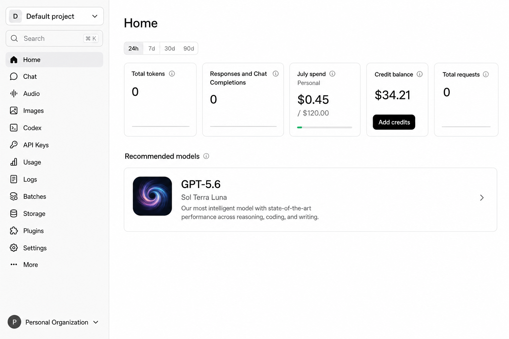
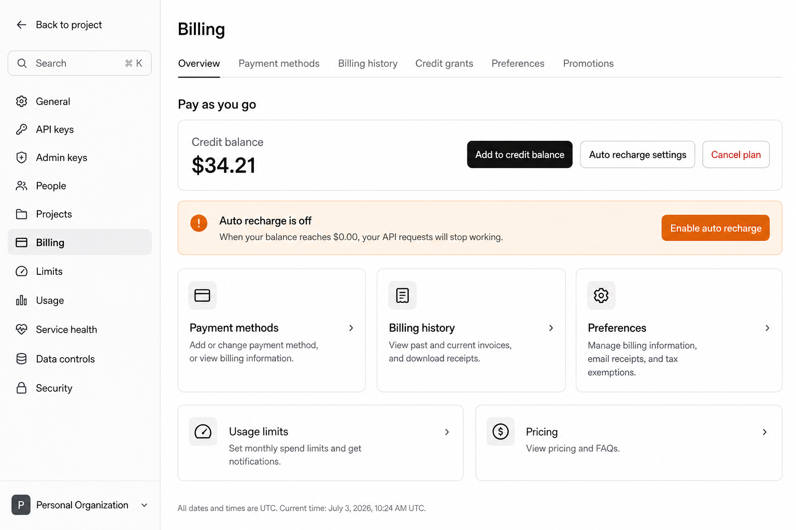
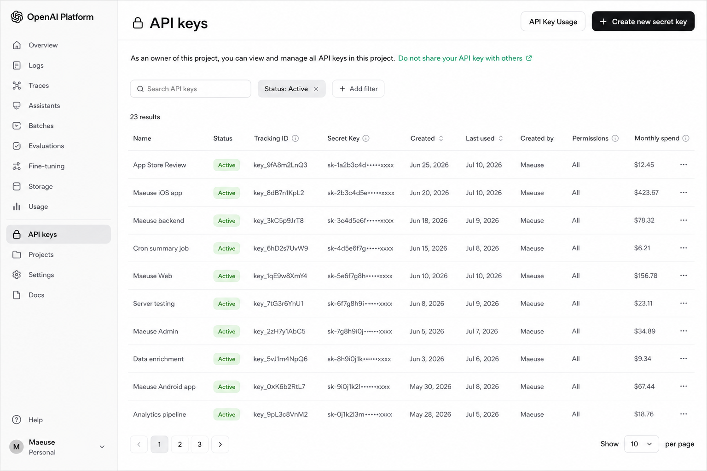
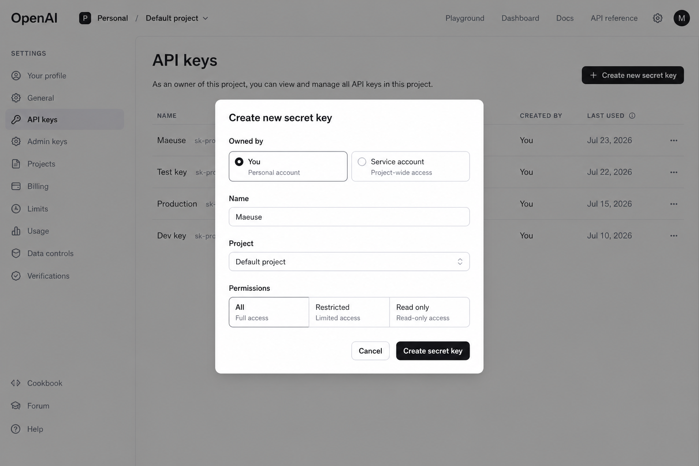

Mäuse Voice Mode talks to OpenAI’s Realtime API with a key you create. This takes a few minutes on the OpenAI Platform - not in the ChatGPT app.
A ChatGPT Plus or Pro subscription does not include API access. You need a separate account at platform.openai.com with prepaid API credits.
1. Open the OpenAI Platform
Go to platform.openai.com and sign in - or create an account with email, Google, Microsoft, or Apple. First-time setup may ask you to verify email or phone and create an organization.

After login you land on the Platform home. API Keys is in the left sidebar. (OpenAI’s UI can change over time.)
2. Add billing credits
API calls draw from a prepaid credit balance. Open Settings → Billing (or go to Billing overview), add a payment method if needed, then choose Add to credit balance. A small top-up (for example $5-$10) is enough to start Voice Mode.

Billing overview shows your credit balance and Add to credit balance.
Without credits, a new key may look valid in Mäuse but Voice Mode requests will fail. Optional: turn on auto recharge or set a monthly spend limit under Usage limits so costs stay predictable.
3. Open API keys
In the left sidebar, click API Keys - or open platform.openai.com/api-keys directly. You’ll see any keys you already created for this project.

The API keys page. Use Create new secret key in the top right.
4. Create a secret key
Click Create new secret key. In the dialog:
Leave Owned by on You (unless you intentionally use a service account).
Give it a clear Name, for example Mäuse.
Choose your Project (Default project is fine).
Set Permissions to All unless you know how to restrict Realtime access.
Then click Create secret key.

Name the key, pick the project, then create it.
OpenAI shows the full secret key only once. Copy it immediately into a password manager or straight into Mäuse. If you close the dialog without copying, create a new key - the old value cannot be revealed again.
5. Paste the key into Mäuse
On your iPhone, open Mäuse → Settings, paste the key, verify it, accept the Voice Mode disclosure, and enable Voice Mode. The microphone control appears after a successful setup.
Security tips
Never email your key or put it in screenshots, chats, or GitHub.
If a key leaks, delete it on the API keys page and create a new one.
Mäuse stores the key on your device for Voice Mode; the Mäuse developer never receives it.
Der Mäuse-Sprachmodus nutzt die OpenAI-Realtime-API mit einem Schlüssel, den du selbst erstellst. Das dauert wenige Minuten auf der OpenAI Platform - nicht in der ChatGPT-App.
Ein ChatGPT-Plus- oder Pro-Abo enthält keinen API-Zugang. Du brauchst ein separates Konto unter platform.openai.com mit vorausbezahltem API-Guthaben.
1. OpenAI Platform öffnen
Öffne platform.openai.com und melde dich an - oder lege ein Konto per E-Mail, Google, Microsoft oder Apple an. Beim ersten Mal können E-Mail- oder Telefonbestätigung und das Anlegen einer Organisation nötig sein.
Nach dem Login landest du auf der Platform-Startseite. API Keys findest du in der linken Seitenleiste. (Die OpenAI-Oberfläche kann sich ändern.)
2. Guthaben aufladen
API-Aufrufe werden von einem Prepaid-Guthaben abgebucht. Öffne Settings → Billing (oder die Billing-Übersicht), hinterlege bei Bedarf eine Zahlungsmethode und wähle Add to credit balance. Ein kleiner Betrag (z. B. 5-10 $) reicht zum Einstieg.
Unter Billing siehst du dein Guthaben und Add to credit balance.
Ohne Guthaben kann ein Schlüssel in Mäuse gültig wirken, aber Sprachmodus-Anfragen scheitern. Optional: Auto-Recharge aktivieren oder unter Usage limits ein monatliches Limit setzen.
3. API Keys öffnen
Klicke links auf API Keys - oder öffne direkt platform.openai.com/api-keys. Dort siehst du vorhandene Schlüssel für dieses Projekt.
Die API-Keys-Seite. Oben rechts: Create new secret key.
4. Secret Key erstellen
Klicke auf Create new secret key. Im Dialog:
Owned by auf You lassen (außer du nutzt bewusst ein Service Account).
Einen klaren Name vergeben, z. B. Mäuse.
Das Project wählen (Default project reicht).
Permissions auf All setzen, sofern du Realtime nicht gezielt einschränkst.
Dann auf Create secret key klicken.
Namen vergeben, Projekt wählen, Schlüssel erstellen.
OpenAI zeigt den vollständigen Secret Key nur einmal. Kopiere ihn sofort in einen Passwortmanager oder direkt in Mäuse. Ohne Kopie musst du einen neuen Schlüssel anlegen - der alte Wert lässt sich nicht erneut anzeigen.
5. Schlüssel in Mäuse eintragen
Öffne auf dem iPhone Mäuse → Einstellungen, füge den Schlüssel ein, verifiziere ihn, akzeptiere den Datenschutzhinweis und aktiviere den Sprachmodus. Danach erscheint das Mikrofonsymbol.
Sicherheitshinweise
Sende den Schlüssel nie per E-Mail und teile ihn nicht in Screenshots, Chats oder auf GitHub.
Bei Leak: Schlüssel auf der API-Keys-Seite löschen und einen neuen erstellen.
Mäuse speichert den Schlüssel auf deinem Gerät; der Entwickler erhält ihn nicht.